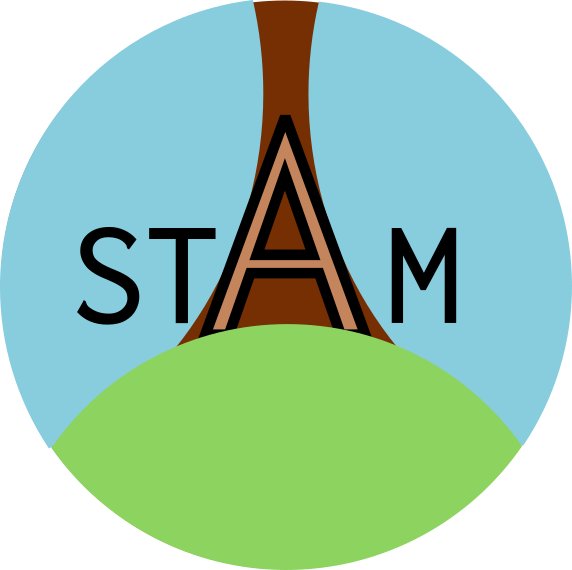

Module tf.about.stam
Excursion: STAM
Maarten van Gompel has created the software library STAM and uses it (among other use cases) to build a pipeline from a corpus of letters by P.C. Hooft in Folia format to text segments and web annotations.

We now have two sytems, STAM and Text-Fabric that can untangle text and markup. They are implemented very differently, and have a different flavour, but at the same time they share the preference of separating the textual data from all the data around the text.
-
intent
- STAM: make it easier for tools and infrastructure to handle texts with annotations.
- TF: support researchers in analysing textual corpora.
-
implementation
- STAM: Rust + Python bindings.
- TF: Pure Python.
-
organization
-
standards
- STAM: actively seeks to interoperate with existing standards, but internally it uses its own way of organizing the data.
- TF: also relies on a few simple conventions w.r.t. data organization and efficient serialization. These conventions are documented. It has several import and export functions, e.g. from TEI, PageXML, MQL, and to MQL, TSV. But it prefers to input and output data in minimalistic streams, without the often redundant strings that are attached to standard formats.
-
model
- STAM: very generic w.r.t. annotations, annotations can target annotations and /or text segments.
- TF: graph model where nodes stand for textual positions and subsets of them, nodes and edges can have features, which are the raw material of annotations, but annotations are not a TF concept.
-
query language
-
display
- STAM: In development, see
stam viewin STAM tools. - TF: Powerful functions to display corpus fragments with highlighting in
tf.advanced. The challenge is to build generic display functions that detect the peculiarities of the corpora.
- STAM: In development, see
-
API
- STAM: in Rust and Python.
- TF: Python.
-
GUI
- STAM: not yet.
- TF: locally served web interface for browsing and searching the corpus.
Both libraries can be used to manage corpus data in intricate ways for research and publishing purposes. How STAM and Text-Fabric will evolve in the dynamic landscape of corpora, analytical methods and AI, is something we cannot predict. For now, their different flavour and intent will define their appeal to the different categories of users.
Expand source code Browse git
"""
.. include:: ../docs/about/stam.md
"""